阅读词表
| 词条 | 拼音 | 类型 | 说明 |
|---|---|---|---|
| 商族 | shāng zú | concept | 商王朝建立前后的族群共同体。 |
| 王亥 | wáng hài | person | 先商重要首领，文献中与牧牛、有易事件相关。 |
| 有易 | yǒu yì | place_or_group | 文献中与王亥牧牛、遇害相关的部落或地域。 |
| 河伯 | hé bó | person_or_deity | 黄河水神或河伯部落首领，文中与商族早期活动相关。 |
| 先商 | xiān shāng | concept | 商王朝建立以前的商族阶段。 |
| 迁徙 | qiān xǐ | concept | 群体从一地迁移到另一地。 |
| 契 | xiè | person | 商族始祖名，读xiè；作“契约、契合”时常读qì。 |
| 殷墟 | yīn xū | site_or_culture | 晚商都邑遗址，甲骨卜辞的重要出土地。 |
| 甲骨卜辞 | jiǎ gǔ bǔ cí | text | 商代刻写在甲骨上的占卜文字。 |
| 玄鸟 | xuán niǎo | concept | 商族起源神话中的神鸟或天命媒介。 |
| 上甲微 | shàng jiǎ wēi | person | 王亥之子，传说中为王亥复仇。 |
| 始祖 | shǐ zǔ | concept | 一个族群传说中的最早祖先。 |
| 有娀 | yǒu sōng | place_or_group | 简狄所在的部族。 |
| 简狄 | jiǎn dí | person | 商族始祖传说中的女性始祖。 |
| 相土 | xiàng tǔ | person | 传说中的商族早期首领。 |
| 图腾 | tú téng | concept | 族群崇拜并作为象征的动物、植物或自然物。 |
| 帝字头 | dì zì tóu | concept | 文中指甲骨文字形中带有神圣意味的构件。 |
| 高辛氏 | gāo xīn shì | person_or_deity | 古史传说中的半神帝王。 |
| 下七垣文化 | xià qī yuán wén huà | site_or_culture | 豫北冀南一带商代早期前后的考古文化。 |
| 岳石文化 | yuè shí wén huà | site_or_culture | 山东地区龙山以后、商代以前的考古文化。 |
| 胲 | hǎi | rare_word | 古人名用字；文中另讨论是否应读作“亥”（hài）。 |
| 辰星 | chén xīng | concept | 古人所说东方星宿，文中与商丘、商名来源相关。 |
| 献祭 | xiàn jì | concept | 把祭品奉献给神灵或祖先。 |
| 杼 | zhù | manual | 织布机上的梭子；亦为夏代帝王名。 |
| 姜嫄 | jiāng yuán | person | 周族始祖传说中的女性始祖。 |
| 阏伯 | è bó | person | 古史传说中主辰星、居商丘的人物。 |
| 实沈 | shí shěn | person | 古史传说中主参星、居大夏的人物。 |
| 少皞氏 | shào hào shì | person_or_deity | 即少昊氏，古史传说中的东部族群始祖。 |
| 郑州商城 | zhèng zhōu shāng chéng | site_or_culture | 商代早期大型城址。 |
| 偃师商城 | yǎn shī shāng chéng | site_or_culture | 商代早期城址，位于二里头以东。 |
| 周原 | zhōu yuán | site_or_culture | 关中地区周族重要遗址和活动中心。 |
| 郯 | tán | place | 古国名，在今山东郯城一带。 |
| 繁衍 | fán yǎn | rare_word | 逐渐增多、传续后代。 |
| 舟筏 | zhōu fá | rare_word | 船和筏一类水上交通工具。 |
| 号咷 | háo táo | rare_word | 大声哭号。 |
| 夷夏东西说 | yí xià dōng xī shuō | concept | 傅斯年提出的古史文化分区观点。 |
| 谱系 | pǔ xì | concept | 祖先和后代的世系排列。 |
| 合祭 | hé jì | concept | 把多位祖先或神灵合在一起祭祀。 |
| 掌故 | zhǎng gù | concept | 历史故事、典故。 |
| 燎祭 | liáo jì | concept | 焚烧祭品以祭神的仪式。 |
| 后稷 | hòu jì | person | 周族始祖传说中的农业神和祖先。 |
| 帝喾 | dì kù | person_or_deity | 古史传说中的帝王。 |
| 新砦 | xīn zhài | site_or_culture | 河南新密遗址；“砦”同“寨”，网页可能误作“新碧”。 |
| 碾子坡遗址 | niǎn zi pō yí zhǐ | site_or_culture | 陕北地区与周族早期活动相关的遗址。 |
| 藁城台西 | gǎo chéng tái xī | site_or_culture | 河北石家庄附近商代遗址。 |
| 鸿沟 | hóng gōu | place | 古代沟通黄河、淮河水系的水道。 |
| 黄泛区 | huáng fàn qū | place | 黄河改道泛滥影响的地区。 |
| 河姆渡文化 | hé mǔ dù wén huà | site_or_culture | 长江下游新石器时代文化。 |
| 肇牵车牛 | zhào qiān chē niú | text | 《尚书》语句，文中用来说明商人贸易生活。 |
| 远服贾 | yuǎn fú gǔ | text | 《尚书》语句，指到远方经商。 |
| 淤积 | yū jī | rare_word | 泥沙等沉积、堆积。 |
| 芦苇荡 | lú wěi dàng | rare_word | 大片生长芦苇的水边湿地。 |
| 鲶鱼 | nián yú | rare_word | 常见淡水鱼，头部宽扁并有触须。 |
| 驮载 | tuó zài | rare_word | 用牲畜背负运载。 |
| 拖曳 | tuō yè | rare_word | 拖拉、牵引。 |
| 惬意 | qiè yì | rare_word | 舒适满意。 |
| 妇孺 | fù rú | rare_word | 妇女和儿童。 |
| 艳遇 | yàn yù | rare_word | 偶然遇到的情爱机会。 |
| 扑朔迷离 | pū shuò mí lí | idiom | 形容事情错综复杂，难以辨清。 |
| 不共戴天 | bù gòng dài tiān | idiom | 仇恨极深，不能共同存在。 |
| 委实 | wěi shí | rare_word | 确实、实在。 |
| 无影无踪 | wú yǐng wú zōng | idiom | 完全没有踪迹。 |
| 掺入 | chān rù | rare_word | 混入、加入。 |
| 口耳相传 | kǒu ěr xiāng chuán | idiom | 通过口头代代传递。 |
| 斩获 | zhǎn huò | rare_word | 取得战果或收获。 |
| 辗转 | zhǎn zhuǎn | rare_word | 反复迁移或经过多处。 |
| 淫乱 | yín luàn | rare_word | 行为放纵失序。 |
| 託 | tuō | rare_word | 同“托”，文中指寄身、依附。 |
| 生死攸关 | shēng sǐ yōu guān | idiom | 关系到生死存亡。 |
| 兕 | sì | rare_word | 古代兽名，文中释为水牛。 |
| 泾渭分明 | jīng wèi fēn míng | idiom | 界限清楚，差别明显。 |
| 蛮荒 | mán huāng | rare_word | 荒远未开发。 |
| 有机可乘 | yǒu jī kě chéng | idiom | 有空子或机会可以利用。 |
| 役使 | yì shǐ | rare_word | 驱使人或动物做事。 |
| 豢养 | huàn yǎng | rare_word | 饲养、供养。 |
| 匪夷所思 | fěi yí suǒ sī | idiom | 超出常理，难以想象。 |
| 生息之地 | shēng xī zhī dì | concept | 繁衍生活的地方。 |
| 器型学 | qì xíng xué | concept | 按器物形制比较、分类和断代的考古方法。 |
| 参商 | shēn shāng | concept | 参星与商星一西一东，常比喻分离难聚。 |
| 机动性 | jī dòng xìng | concept | 快速移动和转换位置的能力。 |
| 两栖 | liǎng qī | concept | 这里指水陆两种环境都能行动。 |
| 施肥 | shī féi | concept | 给土地添加肥料以恢复或提高肥力。 |
| 休耕 | xiū gēng | concept | 让土地暂时停止耕作以恢复肥力。 |
| 轮耕 | lún gēng | concept | 轮换土地耕种。 |
| 游耕 | yóu gēng | concept | 迁移式或轮换式农耕生活。 |
| 同盟势力 | tóng méng shì lì | concept | 互相结盟形成的政治或军事力量。 |
| 征伐 | zhēng fá | concept | 出兵讨伐。 |
| 禁忌 | jìn jì | concept | 宗教或习俗中被禁止、避讳的事物。 |
| 合文 | hé wén | concept | 两个或多个字合写成一个字形。 |
| 神人兽面纹 | shén rén shòu miàn wén | 项目词典 | 良渚玉器上的神人和兽面复合纹样。 |
| 《合集》 | hé jí | 项目词典 | 《甲骨文合集》的简称。 |
| 辉卫文化 | huī wèi wén huà | 项目词典 | 豫北地区与早商前后相关的考古文化。 |
| 卦爻辞 | guà yáo cí | 项目词典 | 《易经》中卦辞和爻辞的合称。 | 《易经》中解释卦、爻的辞句。 |
| 周文王 | zhōu wén wáng | 项目词典 | 周族领袖姬昌。 |
| 宫殿区 | gōng diàn qū | 项目词典 | 都邑中宫殿和王室活动集中的区域。 |
| 王国维 | wáng guó wéi | 项目词典 | 现代学者，文中引用《说珏朋》。 |
| 王陵区 | wáng líng qū | 项目词典 | 王室墓葬集中的区域。 | 王室墓葬和祭祀坑集中的区域。 |
| 祭祀坑 | jì sì kēng | 项目词典 | 用于举行祭祀或埋入祭品的坑穴。 | 考古遗址中用于掩埋祭品或举行祭祀的坑穴。 | 用于祭祀或埋藏祭品的坑穴。 | 用于祭祀埋牲或埋人的坑穴。 | 考古遗址中用于祭祀、掩埋祭品或尸骨的坑穴。 |
| 顾颉刚 | gù jié gāng | 项目词典 | 现代历史学家，“古史辨”学派代表人物。 | 现代史学家，曾研究《周易》爻辞中的故事。 |
| 上帝 | shàng dì | 项目词典 | 商周宗教中的最高神。 |
| 偃师 | yǎn shī | 项目词典 | 今河南洛阳附近地名，二里头遗址所在地。 |
| 卜辞 | bǔ cí | 项目词典 | 甲骨占卜后刻写或记录的辞句。 | 甲骨上记录占卜的文字。 | 占卜时刻写或记录的辞句。 |
| 台西 | tái xī | 项目词典 | 河北藁城商代遗址，文中作为商朝北方军事聚落。 |
| 周公 | zhōu gōng | 项目词典 | 周公旦，武王之弟。 | 周公旦，周初政治家。 |
| 周易 | zhōu yì | 项目词典 | 以《易经》及其传文构成的古代经典。 | 《易经》与后世《易传》合称的经典。 |
| 商汤 | shāng tāng | 项目词典 | 商朝开国君主，传统记载中灭夏。 |
| 商王 | shāng wáng | 项目词典 | 商朝王。 |
| 商颂 | shāng sòng | 项目词典 | 《诗经》中保存商族祭祀与祖先记忆的一组诗。 |
| 土著 | tǔ zhù | 项目词典 | 本地原有居民或族群。 |
| 城邑 | chéng yì | 项目词典 | 古代有人群聚居、具有一定组织和防御功能的城镇聚落。 |
| 妇好 | fù hǎo | 项目词典 | 商王武丁配偶，甲骨文中著名女性军事人物。 |
| 宋国 | sòng guó | 项目词典 | 周初分封商王族后裔之国。 |
| 少康 | shào kāng | 项目词典 | 夏朝传说中的中兴之君。 |
| 尚书 | shàng shū | 项目词典 | 儒家经典之一，文中引用《盘庚》篇。 | 保存上古政治文献和诰命的儒家经典。 |
| 左传 | zuǒ zhuàn | 项目词典 | 春秋史传文献。 |
| 易经 | yì jīng | 项目词典 | 文王卦爻辞体系，书中用以讨论翦商谋略。 | 文王卦爻辞体系。 | 以六十四卦及卦爻辞为主体的古代经典。 |
| 春秋 | chūn qiū | 项目词典 | 孔子时代相关的编年史经典。 |
| 武王 | wǔ wáng | 项目词典 | 周武王。 |
| 殷商 | yīn shāng | 项目词典 | 商朝后期文化和政权。 | 商代后期以殷墟为中心的商王朝阶段。 |
| 水牛 | shuǐ niú | 项目词典 | 商人畜牧和祭祀中涉及的家畜。 |
| 淮河 | huái hé | 项目词典 | 中国东部重要河流。 |
| 灰坑 | huī kēng | 项目词典 | 考古遗迹中常见的垃圾坑或废弃坑。 | 遗址中含灰土、废弃物或祭祀遗存的坑穴。 |
| 爻辞 | yáo cí | 项目词典 | 解释每一爻吉凶和意义的文字。 |
| 祭品 | jì pǐn | 项目词典 | 祭祀时献给神灵或祖先的物品。 |
| 良渚 | liáng zhǔ | 项目词典 | 长江下游新石器时代重要考古文化和古城遗址。 |
| 藁城 | gǎo chéng | 项目词典 | 今河北石家庄藁城区，台西遗址所在地。 |
| 西土 | xī tǔ | 项目词典 | 周族所在的西方地区。 |
| 诗经 | shī jīng | 项目词典 | 中国古代诗歌总集，儒家经典之一。 |
| 酋长 | qiú zhǎng | 项目词典 | 部落或地方共同体的首领。 |
| 铭文 | míng wén | 项目词典 | 铸刻在青铜器等器物上的文字。 | 器物上铸刻或刻写的文字。 |
| 长发 | cháng fā | 项目词典 | 《诗经・商颂》篇名，歌颂商族祖先和商汤功业。 |
| 高祖 | gāo zǔ | 项目词典 | 商人祭祀体系中的远祖称谓。 |
青铜器词表
| 器名 | 拼音 | 类型 | 说明 |
|---|---|---|---|
| 戈 | gē | bronze_item | 古代横刃长柄兵器。 |
章节导读札记
| 主题 | 札记 | 操作 |
|---|---|---|
| 暂无章节导读札记 | ||
用户札记
| 类型 | 页 | 内容 |
|---|---|---|
| 暂无用户札记 | ||
原书阅读器页 103原书物理 PDF 页 101印刷页 89
第五章商族来源之谜
黄河水漫流在绿色大平原上，淤积出一片片沙洲，芦苇荡宛若迷宫。偶尔有人驾木筏驶入芦荡，设下捕鱼笼，用骨头磨制的鱼钩钓起鲶鱼和鲤鱼。鳄鱼在水草间露出头，发出低沉而有穿透力的鸣叫。古人认为，它们在召唤雷雨。
一大群穿着土黄或暗红色麻布短衣的外来者，从南方缓缓走近，驱赶着褐色的水牛群，甚至还有几头高大的亚洲象。大象已经被驯化，恭敬地服从主人的命令。有些牛驮载着包裹，有些拖曳着吱呀作响的双轮车。
人们在岸边扎营，砍下芦苇捆扎成筏子。水牛、大象卸下了重负，惬意地踱入湿地中。
这是近四千年前的古黄河下游，传说中的河伯部落的领地。新来的陌生人是商族，他们听说黄河北有茂盛的草场和富裕的部族，准备去那里放牧度夏，并和当地人交易。
陌生之地也意味着危险。商族人和河伯部族虽然已经比较熟悉，但从未涉足过河北的世界。当时的商族首领是王亥，四十岁左右。他决定把家眷和部落妇孺及大象留在河伯领地内，自己带男丁赶牛群渡河北上。据说，易水河部落盛产美女，王亥期待此行可以发财，甚至获得艳遇。
这是中国古史中的一段商族往事。而商族的起源，是中国早期文明中最为扑朔迷离的话题。
上帝与鸟蛋
商王朝建立之前（学者称之为“先商”），商族人究竟生活在哪里，是一群什么样的人，对此，考古学一直没有答案。发掘工作只能显示，有一群形象模糊、落后的人居然攻灭青铜王朝夏-二里头，建立了商朝。
夏都二里头被外来者占领后，增加了一些外来样式的陶器，但难以解释的是，这些陶器并没有统一的风格，如前文所述，有的属于河北和河南两省交界处的下七垣文化，有的属于山东地区的岳石文化。之后，商人新建了两座城邑——郑州商城和偃师商城，但其陶器也分为好多种风格，多样程度甚至超过被占领后的二里头古城。
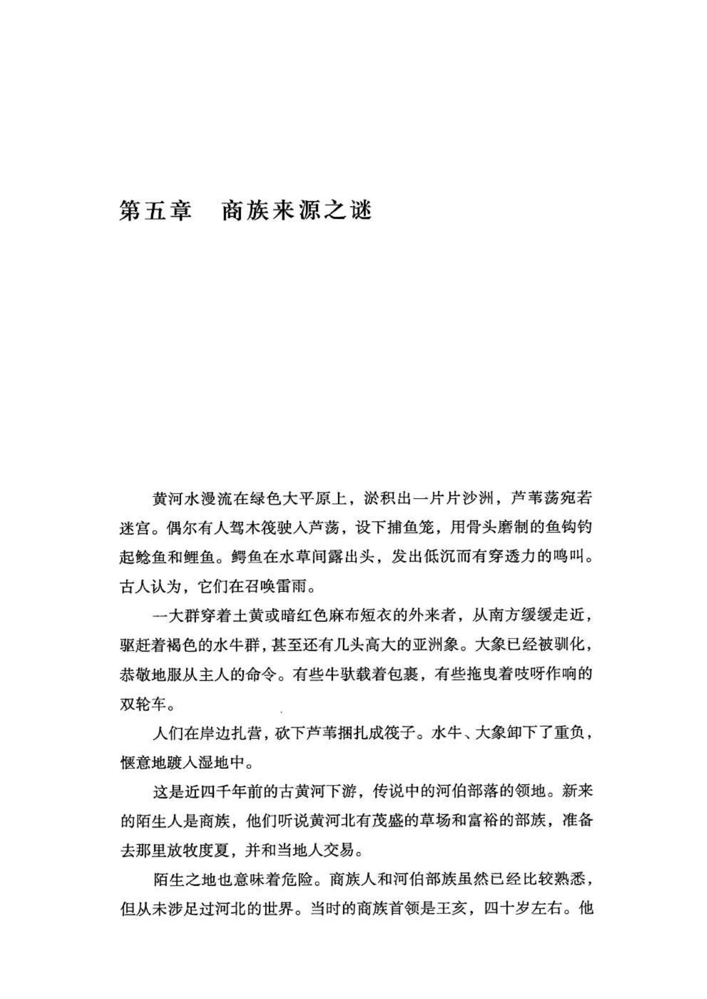
原书阅读器页 104原书物理 PDF 页 102印刷页 90
上古时代，即便是同一种陶器文化内部，通常也存在着众多部落，彼此互不统属，甚至不共戴天。而来自不同陶器文化的人群居然共同参与了灭夏和建商，这委实让人难以理解。
这群灭亡夏朝的所谓商人，到底来自哪里？通过考古能不能找到他们的聚落？
初看起来，这个问题应当不太困难。比如，夏朝一二里头的创建者来自新砦；再如，灭商之前的周族人曾在陕北山地生活（碾子坡遗址），后来又迁到关中的周原，甚至考古工作者还在周原发掘出了周文王起居的宅院。
关于商人在灭夏前的生息之地，学界曾有过两种猜测。
其一，受王国维及殷墟发掘的启发，傅斯年提出了“夷夏东西说”，认为夏朝代表晋南和豫西等地的西部文化，它的对手商人是东夷，属于东方文化，所以傅斯年猜测，位于豫东的商丘古城应当是商族人的兴起之地。[[fn:1]] 20世纪末，傅斯年的学术传人张光直借助美国人类学的资源和影响力，曾经和国内考古学界合作，在以商丘为中心的豫东地区寻找“先商”，但没有发现任何迹象。
其二，随着陶器“器型学”成果的积累，有些考古学者认为，夏商易代时，来自河南和河北交界处的陶器文化曾侵入中原，所以应该在下七垣文化里寻找“先商”。[[fn:2]] 但数十年来，考古工作者并没能找到任何稍具规模的城邑，只有一些不起眼的小型农业聚落，丝毫看不出有灭夏、建立王朝的气象。
所以，从考古上，商族在灭夏之前的定居地无影无踪，攻占夏都二里头的人的来源也很复杂。但是，对于这些考古学难以解释的现象，古人的史书里却可能藏着答案。
《诗经》和《史记》里就有商族始祖起源的传说，但也难免掺入一些周朝之后增加和改写的内容。我们先来看比较古老的。
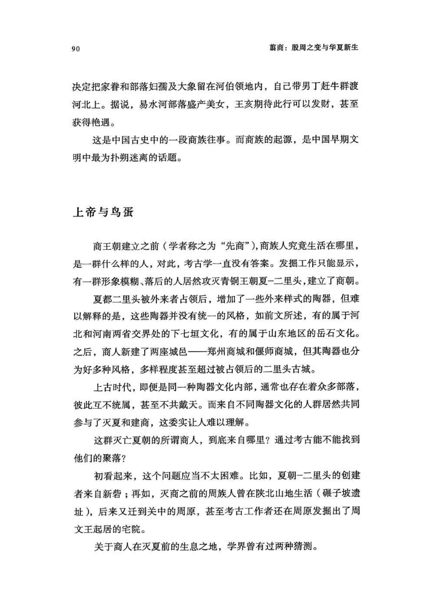
原书阅读器页 105原书物理 PDF 页 103印刷页 91
据说，商人始祖是一名叫简狄的女子，有次在野外洗澡时，她见到玄鸟产下一枚卵，就吞了下去，结果生下儿子契，繁衍出后来的商族。上古时代，常有女子未婚生育的神话，据说这是母系时代“知其母，不知其父”的特征。周族史诗也是如此，他们的女性始祖姜嫄在荒野踩到巨人脚印而怀孕，生下弃（后稷），从而繁衍出周族。[[fn:3]]
《诗经•商颂•玄鸟》对契降生的描写是：“天命玄鸟，降而生商。” 《诗经•商颂•长发》则是：“有娀方将，帝立子生商。”有娀是简狄所在的部族，“有娀方将”是有娀氏将要兴起之意。玄鸟，喻指上帝（天）和商人之间的独特媒介，至于是什么鸟，则有燕子和凤凰等不同解释。
契长大后，脱离了母亲的有娀氏部族，建立起商族。商之名来源于“商丘”，而这个地名更古老，和代表东方的辰（晨）星之神有关。
据说，上古时代有一位叫高辛氏的半神帝王，他的两个儿子不和睦，整天打斗，高辛氏一怒之下把小儿子安顿在了“大夏”（晋南），负责祭祀傍晚的参星；把大儿子安顿在了商丘，负责祭祀黎明的辰星，由此，辰星也被叫作商星。传说的结尾，诸神已经离开大地，契开始定居在商丘，他的部族也获得了“商”之名。
昔高辛氏有二子，伯曰阏伯，季曰实沈，居于旷林，不相能也，日寻干戈，以相征讨。后帝不臧，迁阏伯于商丘，主辰。商人是因，故辰为商星。迁实沈于大夏，主参，唐人是因，以服事夏、商。（《左传•昭公元年》）
杜甫诗云：“人生不相见，动如参与商。”商星都是黎明时在东方出现，参星总是黄昏时在西方出现，永远一东一西，所以人生分离难聚也被称为“参商”。
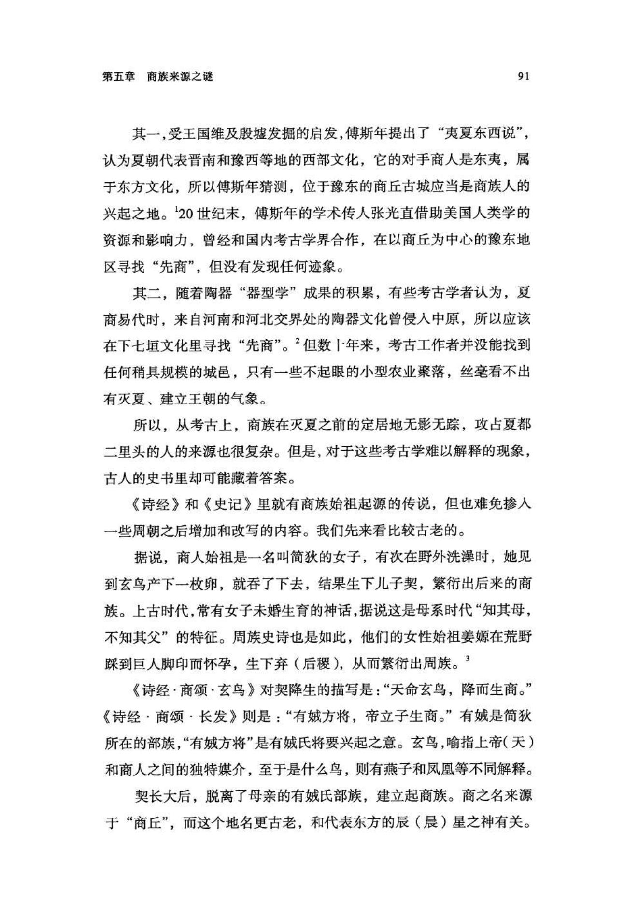
原书阅读器页 106原书物理 PDF 页 104印刷页 92
春秋的贵族还说，宋国是辰星之族的故地，所谓：“宋，大辰之虚也。"（《左传•昭公十七年》）宋国的都城在商丘，而宋人是商人后裔，可见，从王朝兴起之前到灭亡之后，商丘一直和商人有缘。从神话传说时代到春秋再到今天，中国唯一没有变过的地名，可能就是商丘了。
先商的始祖谱系从契开始，到灭夏的武王成汤（甲骨文中的“天乙”），一共有过十四代首领，共经历八次迁徙：“成汤，自契至汤八迁。汤始居亳，从先王居，作帝诰。”（《史记•殷本纪》）也就是说，平均不到两代人就要迁徙一次。
当然，上古先民的史事都是靠口耳相传，会经历很多简化。从契到成汤很可能不止十四位首领，也可能不止迁徙八次，但先商族人曾经频繁迁徙，这一点应当是成立的。
关于商族早期的迁徙范围，史书记载很少，而且往往超出后人的理解能力。比如商人史诗《诗经•长发》提到，商族第三代首领相土功业卓著，曾经到海外大有斩获：“相土烈烈，海外有截。”
从河南商丘一带去往黄海，需要横穿江苏省，然后还要在海滨造船筏。相土时代的商族，规模还很小，难以解释他们为何要进行这种远征，而且，如果不是在海滨长期生活，熟悉航海规律，也不可能从事航海活动。
另一种可能是，商丘处在沟通淮河和黄河（济水）的水系中间，从这里乘上舟筏，向北可以进入济水和渤海湾，向南可以进入淮河和黄海。也许商族人曾经借助河网水系航行，抢劫过一些滨海人群的聚落。
关于相土还有一个传说，说他“作乘马”（《世本•作篇》），意思是发明马拉的车。这应当是后人虚构的，在夏代和商代前期的考古中，迄今尚未发现有驯化的家马和马拉车。
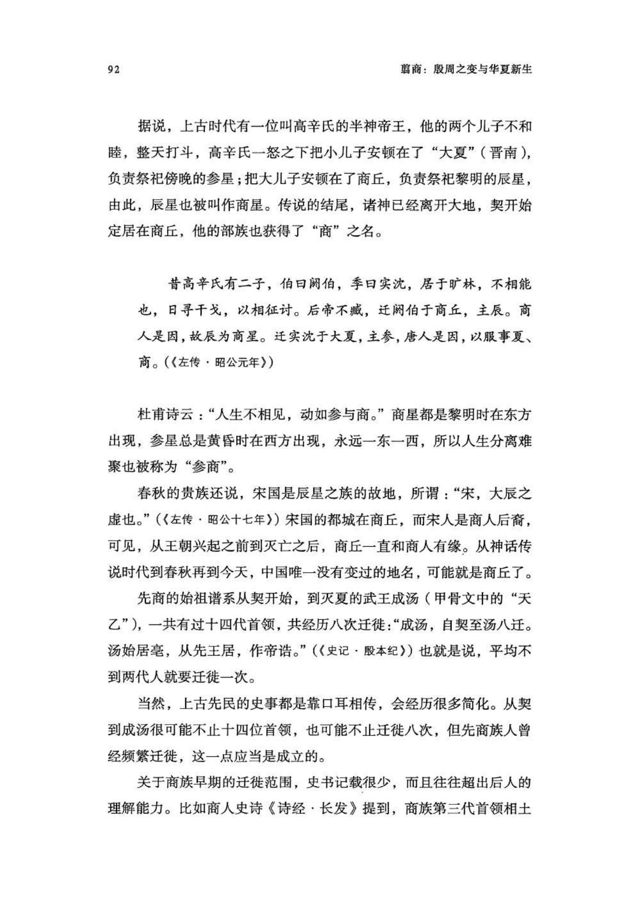
原书阅读器页 107原书物理 PDF 页 105印刷页 93
但在商人辗转迁徙的历程中，明显的趋势是向北方移动。古史记载，在夏朝前期，商族第六代先君冥淹死在了水里：“冥勤其官而水死。”[[fn:4]] 看来他们还在过着舟筏漂泊的生活。冥的儿子是王亥，[[fn:5]] 他曾带领族人赶着牛群北渡黄河，借用河伯部落和有易部落的领地牧牛——有易可能是易水流域，也就是说已经进入河北省中部。
史载，王亥生活不检点，曾和兄弟一起在有易部落淫乱（可能勾引了当地酋长家的女子），结果自己和兄弟被杀死，牛群也被有易氏占有。王亥的儿子上甲微继承族长（第八代）后，向河伯部落请求援军，终于攻灭了有易氏，夺回了牛群。
有人曰王亥，两手操鸟，方食其头。王亥託于有易、河伯仆牛。有易杀王亥，取仆牛。（《山海经·大荒东经》）
殷王子亥宾于有易而淫焉，有易之君隘臣杀而放之。是故殷主甲微假师河伯以伐有易，灭之，遂杀其君隘臣也。（郭璞注引《竹书纪年》）
王亥遇害这段，在楚辞《天问》中也出现过。从文献的记载看，上甲微带族人复仇之后，并没有占据有易氏的地盘定居下来，而是继续漫游。
对商族来说，王亥遇难和上甲微复仇是生死攸关的事件，也是商族历史上的重要分水岭。
在殷墟甲骨卜辞中，后世商王称王亥为“高祖王亥”，经常单独祭祀他；而上甲微多是和之后的历代先君、先王一起接受祭祀，卜辞写作“自上甲”或者“自上甲至（某先王）”。
至于河伯，甲骨卜辞里给他的献祭也很多，有时还称为“高祖河”，也把他纳入了历代先君的谱系。有时，商王会联合祭祀河（河伯）、王亥和上甲微。比如，某个五月的祭祀里，给这三位先君一起奉献的祭品是：“燎于河、王亥、上甲十牛，卯十羊。五月。”（《合集》1182）意思是焚烧（燎）十头牛，剖开十头羊。商王还会占问：“王亥、上甲即宗于河？ ”[[fn:6]] 意思是，王亥、上甲微会进入河伯的宗庙吗？
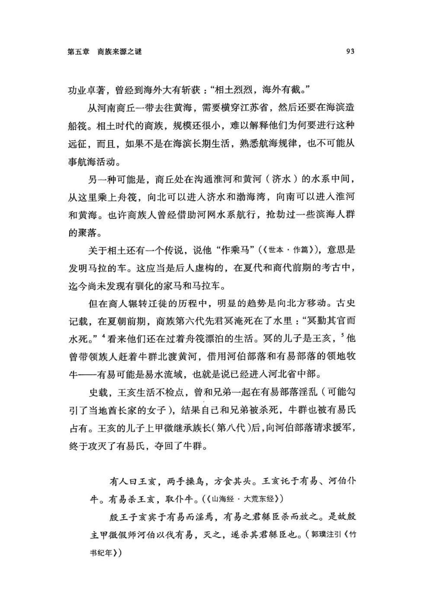
原书阅读器页 108原书物理 PDF 页 106印刷页 94
商末，周文王研究《易经》占算方式时，王亥事件也被他作为重要事例收入卦爻辞推演之中：
丧羊于易，无悔。（《易经•大壮》六五爻辞）
丧牛于易，凶。（《易经•旅》上九爻辞）
但史书中并没有王亥牧羊的记载。周族人原本在西部高地放牧羊和黄牛，所以，周文王可能是用自己熟悉的生活来想象王亥时代，错误地增加了一条“丧羊于易”：羊不适应潮湿环境，不适合王亥时代的商族人。这也说明，《易经》卦爻辞中的商代史事并不完全可信，周文王可能会基于西土周人的环境错误地理解商人历史。
水牛背上的游牧
先商族属于上古时代特殊的“游牧族”，流动性很强，以牧牛为主，而联系其在当时的技术条件下竟还可以北渡黄河，说明放牧的是水牛，而非黄牛。
在殷墟甲骨卜辞中，商族始祖契被写作“兕（sì）”，意为水牛，字形是一个人头顶水牛角。看来，他们从一开始就和水牛有缘。[[fn:7]] 商族人当初生活的地方偏南，有较多水牛，不仅畜牧业收益颇丰，而且牛群也赋予商族人以机动性，可以活跃在潮湿的大平原，迁往更远的地方。
再结合考古，商族人也是一直和水牛分不开的。在夏代的二里头遗址，只发现过黄牛的骨骼。而到商族人灭夏之初，郑州商城和偃师商城的遗址则既有黄牛，也有水牛的骨骼——水牛很可能就是商族人带来的。到商代中期，石家庄市郊的藁城台西商人遗址也有完整的水牛骨架祭祀坑。这是夏商以来水牛分布的最北边界。此外，安阳殷墟遗址也大量出土有水牛骨。当然，现在的石家庄、安阳和郑州都已经不适合水牛生存了。
游牧和农耕需要的环境很不一样。三千年以来，游牧地区多是较干旱、气温低，不适合农业种植的地域；但在夏商，情况恰好相反，当时气候比现代湿热，平原地区大多是湿地沼泽，反而不适合人类居住和活动。大禹和夏人的湿地改造只是局部的，还不能改变黄河下游的整体面貌。在这种背景下，借助水牛群，商族人恰好可以活跃在黄河下游的大平原和湿地。
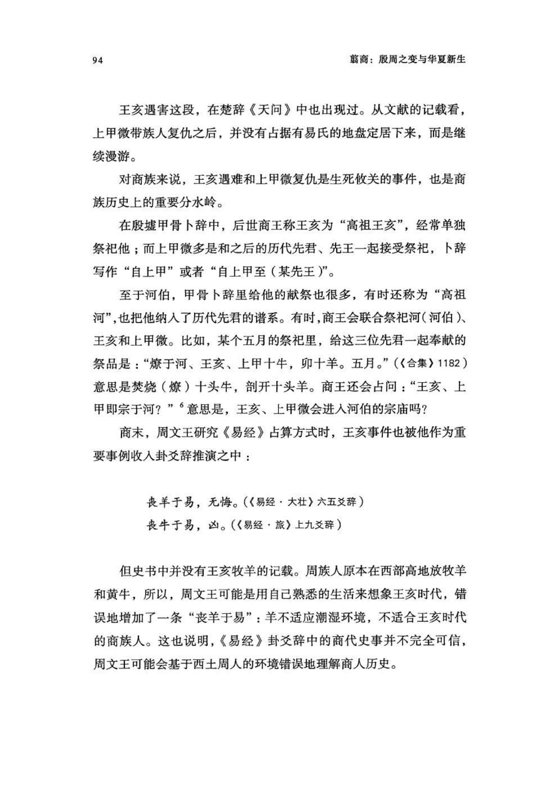
原书阅读器页 109原书物理 PDF 页 107印刷页 95
古书还记载是王亥发明了用牛拉车：“胲（hǎi）作服牛。”（《世本•作篇》）结合考古来看，夏都二里头已经有了人力推拉的两轮车，用牛来拉两轮车也属顺理成章，毕竟牛车速度比马车慢得多，对车辆的制造工艺要求较低，王亥时代的商族人完全有可能胜任。这样，水牛群可以穿行于泥沼湿地，牛拉双轮车可以在旱地陆路从事运输，商族人由此获得了“两栖”行动能力。
〔按语：胲,黃帝臣也,能駕牛。胲（hài）：多音字，似应读「亥」〕
除了畜牧业，商族人此时可能还从事贸易，这是流动性强的部族天然具有的特长。虽然没有直接的文献材料，但有些间接证据，比如，周公在商朝灭亡之初谈到有些商族人的生计方式时，就曾经说他们牵着牛车到远方贸易挣钱孝敬父母：“肇牵车牛，远服贾，用孝养厥父母。” （《尚书•酒诰》）
商朝灭亡后，很多商族人从事的便是贸易行业，所以，在部族、王朝之名外，“商”还衍变为行业、职业之名，结果，本来代表贸易的“贾”字被“商”所取代。
在早期商族的畜牧迁徙和商贸生活中，也可能有一些农业经济。上古时期还欠缺农田施肥技术，往往因肥力耗尽而需要休耕或轮耕，因此，商族可能会在一处新定居地停留数年或数十年，利用周边草场放牧，同时开发一些农田，所以有学者推测，商人过的是“游耕”生活。[[fn:8]]
先商族活动的地域，主要在黄河下游以及黄河南流入淮的流域范围内（秦汉时期的“鸿沟”水系），是一条南北狭长的湿地“走廊”。张光直已经注意到，在漫长的新石器时代，沟通黄河与淮河的狭长地带（近代所谓“黄泛区”）属于难以开发的湿地，一直少有聚落遗址，所以豫西和山东的新石器文化一直存在泾渭分明的区别。[[fn:9]] 而商族出世不久就已成为这片蛮荒湿地上的活跃因素。
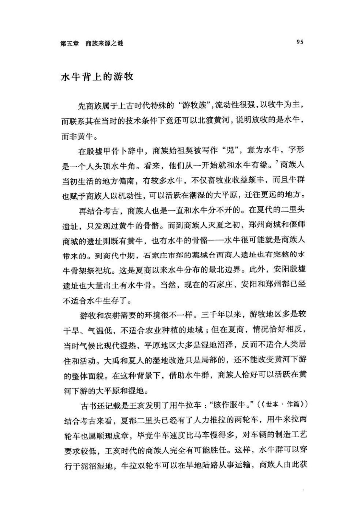
原书阅读器页 110原书物理 PDF 页 108印刷页 96
这一地带的北端是下七垣文化和辉卫文化范围，向西是夏人的二里头文化，向东是山东的岳石文化。因频繁迁徙，商族人很难留下定居城邑遗址，但也使他们有机会见识各地的族群以及夏王朝。
繁荣的夏王朝需要东方物产，特别是海产品，而夏朝的产品，特别是一些小件铜器，如刀和锥等，则可以销往东方。虽然夏朝严密保守青铜技术，但这类小件商品的流出应该难以完全阻止。而且，商族人很可能就是在经营贸易的过程中发现夏朝有机可乘，与下七垣、岳石文化中的一些族群建立起紧密联系，逐渐形成了同盟势力。
结合二里头遗址后期的现象，可以合理推测：因夏都的王族和铸铜族群的矛盾日渐激化，二里头铸铜人应该是在危急之中联络了商族，于是，商汤带领东方同盟各族大举西征，攻占了夏朝。但在管理王朝和青铜技术方面，商族和它的东方盟友都缺乏经验，用了半个世纪左右才完整吸收了夏朝的遗产，并融合各原有文化，形成了新的、更广泛意义上的商族。
在灭夏之前，商族人很可能已经发明了最初的文字。商业贸易需要记账和远程传递信息，而这都会刺激数字和文字的发明。在商人创造文字之前，很多部落已经有了初步的记事符号，比如，对良渚文化和龙山文化的考古，就曾发掘出一些刻划符号的陶片。而商族人在迁徙和贸易中与较多部族打过交道，有机会见到各种记事符号的用法，所以，在此基础上进行汇总是完全有可能积累起完整记录语言的字符体系的。
在商人创造的“甲骨文”里，暴力、征伐和杀戮是最常见的字形。这是因为在国家和王朝统治秩序尚未建立的东方，部落之间充满敌意，动辄发生冲突，商人的迁徙和贸易很少能在和平氛围里进行，需要部落武士的武装保护。
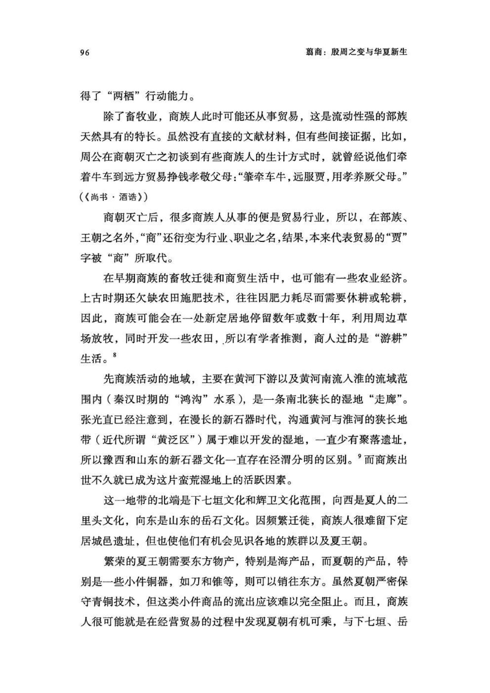
原书阅读器页 111原书物理 PDF 页 109印刷页 97
有些甲骨文字显示的，则是先商人的水上生活：由部首“舟”构成的字就特别多，而且很多是常用字，只是在后世的字形演变中，很多“舟”旁发生了改变，现代人已经看不出和舟船的关系。比如，常用的“受”字（这也是末代商王纣的名字），甲骨文写作字形是两只手在交接一条舟船，意思是“接受”。在后世，“舟”部则变成了“又”部，甲骨文的含义也就丢失了。
再比如“南”，甲骨文写作（甲骨文），“木”在上，“舟”在下，大树下面有一条船，可能代表的是商族人对南方的印象：那里树木繁茂，舟船是生活之必需。至于“北”，甲骨文写作（甲骨文），本意是“背离”的背：对商人来说，去往北方是离开自己原本熟悉的家园。
早期商人的生活中，大象（亚洲象）曾经起过重要作用，汉字“为”是常用字，其甲骨文字形是一个人手牵一只大象的鼻子，说明在发明文字时，商人已经驯化和役使大象。而且，这种驯养象的习惯一直持续到殷商：王陵祭祀坑中不止一次出土过整具的象骨。
鸟神崇拜
商人崇拜的神有多种，最崇高的是“帝”，此外，还有鸟，而这应该跟商族的创始神话和早期图腾有关。[[fn:10]]
在上古时代，鸟崇拜主要存在于东部沿海地区。河姆渡文化（距今7000—5600年）中有很多刻画鸟类图形的骨雕和木雕，良渚文化（距今5300—4300年）也有明显的鸟崇拜，如古国王族最高级的玉器上刻画的神人兽面纹，神人头戴羽冠，旁边相伴的是鸟形图案。
春秋时期，山东南部的土著小国郯（tán）国的一个著名传统就是用鸟来命名各种官职。郯国国君说，自己的始祖是“少皞氏”（少昊），而少皞氏建立的国家的各种官职都是鸟名。（《左传·昭公十七年》）这也是东部沿海崇拜鸟的记忆和表征。
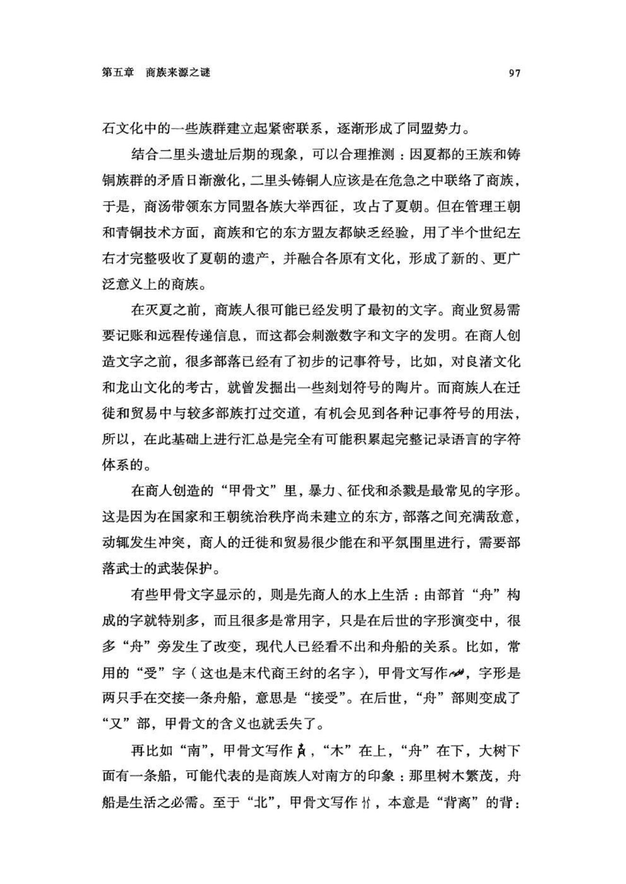
原书阅读器页 112原书物理 PDF 页 110印刷页 98
商族始祖契是简狄吞玄鸟之卵后所生，说明鸟是天帝和商人联系的纽带。《山海经》这样记载商族第六代首领王亥：“有人曰王亥，两手操鸟，方食其头。”看着很含糊，难以确定是人要吃鸟的头，还是鸟要吃人的头，但王亥和鸟的联系在甲骨卜辞中有证据：“辛巳…… 贞：王亥、上甲即于河……”（《合集》34294）其中，“亥”的甲骨文写作（甲骨文）。
这条卜辞占问的是王亥、上甲微父子是否和河伯在一起，以便商王举行合祭。其中，“亥”字有非常明显的鸟形，而那些与王亥无关的，比如地支记日之“亥”，则不会有鸟形。
《易经》中也多次出现过鸟。周人和商族起源不同，并不崇拜鸟，但在创作《易经》时，周文王引用了一些与鸟有关的商人的历史掌故，如《旅》卦上九爻辞：
鸟焚其巢，旅人先笑后号咷。丧牛于易。凶。
这条爻辞涉及王亥在有易氏丧牛和被杀之事。“旅人先笑后号咷”是关于王亥旅行在外的遭遇；而鸟巢被焚毁，则象征王亥的命运。长期以来，人们都没有发现《易经》里隐藏的这段掌故，直到民国时期才被顾颉刚破解：“丧牛于易”是说王亥在有易氏部落遇难，牛群被夺走。[[fn:11]]
在殷墟甲骨卜辞中，也有商王祭祀“鸟”的内容，如焚烧“一羊、一豕、一犬”和“三羊、三豕、三犬”献祭给鸟，[[fn:12]] 但不知道接受祭祀的是随机飞来的野鸟，还是商王专门饲养的神鸟。此外，商王还多次从鸟鸣中占卜吉凶。
《史记•殷本纪》记载，某次祭祀商汤时，一只野鸡落在鼎的耳上不停鸣叫，高宗武丁非常紧张，大臣祖己趁机发表了一番道德说教，最终“（武丁）修政行德，天下咸欢，殷道复兴”。
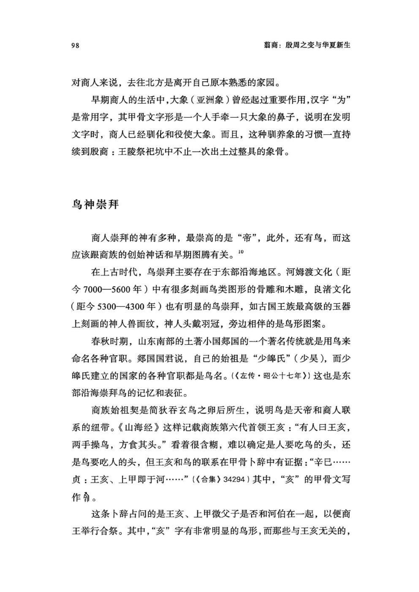
原书阅读器页 113原书物理 PDF 页 111印刷页 99
此事的道德元素应是后人添加的，但野鸡引起武丁紧张之事应当有原型。只不过，这需要放在商人崇拜鸟的背景中才好理解。
商代晚期的青铜器铭文中曾出现“玄鸟妇”三个字，可能是通灵降神的女巫，负责在王族祭祀中召唤玄鸟之神降临。
那么，商人这种崇拜鸟的宗教，对现实生活有什么影响？
其一，在甲骨卜辞中，有多条商王捕猎野鸡“雉”的记载，但未见捕猎其他鸟类，而且从来没有用禽类和蛋类献祭或食用的记载。其二，在商人的遗址和墓葬中，食用家禽的现象虽不能说完全没有，但的确比较少。殷墟宫殿区灰坑中曾发现猛禽和孔雀的骨头，王陵区的少数祭祀坑中也有猛禽骨，可能是王室豢养的猎鹰和珍禽，但不清楚是否有供奉崇拜的神鸟之意。总之，商人对禽和蛋的禁忌要多于别的族群。
在甲骨文中，最神圣的是“帝”字，写作（甲骨文），但其含义不明。有人认为，它是各线条汇合到一起，象征天地间的中心；也有人认为它是一捆支起来进行燎祭的柴堆，用燎祭的造型代表接受祭祀的帝神。[[fn:13]] 卜辞中，帝也称“上帝”，有时会在帝字上面加一短横，是为“上帝”二字的合文，写作（甲骨文）。这一短横在现代汉字中演变成了点，所以现代的“帝”字，其实是甲骨文的“上帝”二字。
不管“帝”字的具体含义是什么，其关键肯定是神圣之意。作为一个偏旁，它也被用于其他带有神圣含义的文字，一般只保留上半部分的倒三角形状。
比如，龙，甲骨文写作（甲骨文），是顶着帝字头的龙形；凤，甲骨文写（甲骨文），作是顶着帝字头的鸟形；商人自己的“商”，甲骨文写作（甲骨文），帝字高高站立于一座大门（牌楼）之上，有时上面还会有两个并列的帝字头，写作（甲骨文）。
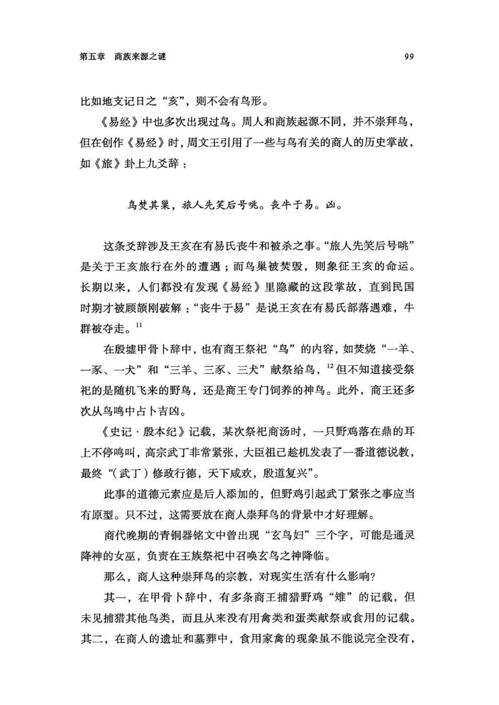
原书阅读器页 114原书物理 PDF 页 112印刷页 100
“玄鸟妇”铭文拓片（图）
殷墟出土的武丁夫人妇好的墓，就随葬有多件龙凤造型玉器，而且龙和凤头上都有如甲骨文中的角（帝字头），特别是354号标本，“为一龙与怪鸟的形象，颇似怪鸟负龙升天的画面”[[fn:14]]：龙头上有一只“角”，怪鸟则有两只。此外，妇好墓371号玉器是跪坐的人形，身上雕刻出衣饰花纹，身后伸出如同羽毛的鸟尾。这些玉器可能都反映了商人对鸟的崇拜。
商族人有奇异的来历，他们开创的王朝也注定不会平凡，特别是王朝建立之初，产生了诸多现代人匪夷所思的奇迹。
注释
1傅斯年：《夷夏东西说》，《国立中央研究院历史语言研究所集刊》外编，第一种，《蔡元培先生六十五岁庆祝论文集》，下册，1934年。
2王震中：《商族起源与先商社会变迁》，中国社会科学出版社，2010年；北京大学震旦古代文明研究中心等：《早期夏文化与先商文化研究论文集》，科学出版社，2012年。
3但在《史记》里，司马迁又给简狄和姜嫄安排了同一位丈夫，半神的帝王帝喾。这属于春秋之后的改编版，在《诗经》的商、周两族史诗里，都没记载这两位女子有丈夫。
4《国语•鲁语上》与《礼记•祭法》。还有记载说，夏朝帝王少康、杼（zhù）委派冥去治理黄河，结果殉职被淹死。见于《今本竹书纪年》：“帝少康十一年使商侯冥治河”，“帝杼十三年商侯冥死于河”。但《今本竹书纪年》是不可靠的文献，它关于上古的事件都有准确纪年，可信度反而降低。有研究者认为，《今本竹书纪年》是南宋以后的人伪造的。
5《史记•殷本纪》中，冥的儿子是“振”，振的儿子是“微“。王国维发现，“振”就是《山海经》中的“王亥”，甲骨卜辞中也多次出现祭祀“王亥”，所以“振”是“亥”的误写。“微”在《竹书纪年》中写作“殷主甲微”，甲骨卜辞中写作“上甲”。
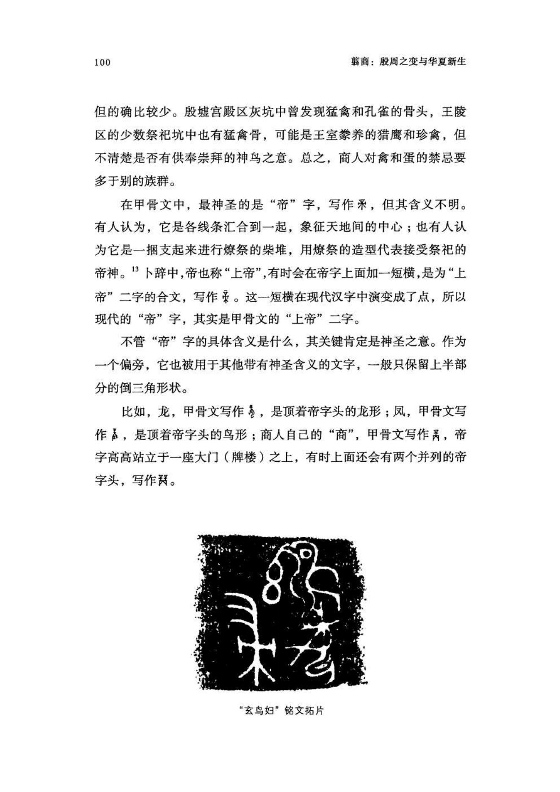
原书阅读器页 115原书物理 PDF 页 113印刷页 101
6参见中国社科院考古所《小屯南地甲骨》，1980年，1116条。以下简称《屯南》。
7韩江苏、江林昌：《〈殷本纪〉订补与商史人物徵》，中国社会科学出版社，2010年，第63页。
8傅筑夫：《殷代的游农与殷人的迁居》，《中国经济史论丛》上册，生活•读书•新
知三联书店，1980年，第46页。
9张光直：《中国相互作用圈与文明的形成》，《庆祝苏秉琦考古五十五周年论
文集》，文物出版社，1988年。
10胡厚宣：《甲骨文商族鸟图腾的遗迹》，《历史论丛》第1辑，中华书局，1964年；《甲骨文所见商族鸟图腾的新证据》，《文物》1977年第2期。顾颉刚：《鸟夷族的图腾崇拜及其氏族集团的兴亡》，《古史考》第六卷，海南出版社，2003年。
11顾颉刚：《周易卦爻辞中的故事》，《燕京学报》1929年第6期。
12常玉芝：《商代宗教祭祀》，中国社会科学出版社，2010年，第156页。
13参见常玉芝《商代宗教祭祀》，第21页。
14中国社科院考古所：《殷墟妇好墓》，文物出版社，1980年，第159页。
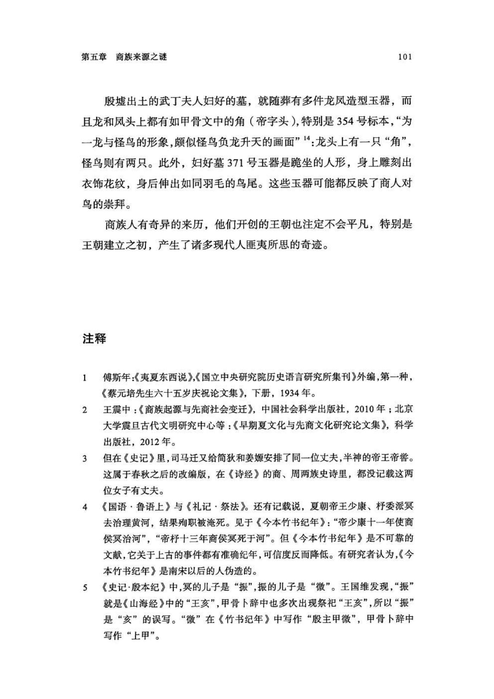
原书阅读器页 116原书物理 PDF 页 114印刷页 102
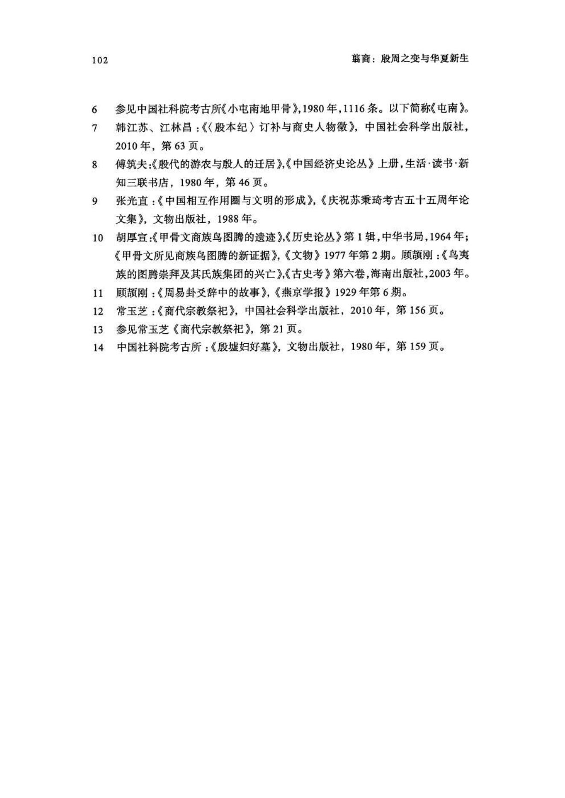
编辑札记
标记
先在正文中选择文字，再输入拼音；可用“拼音；简注”。